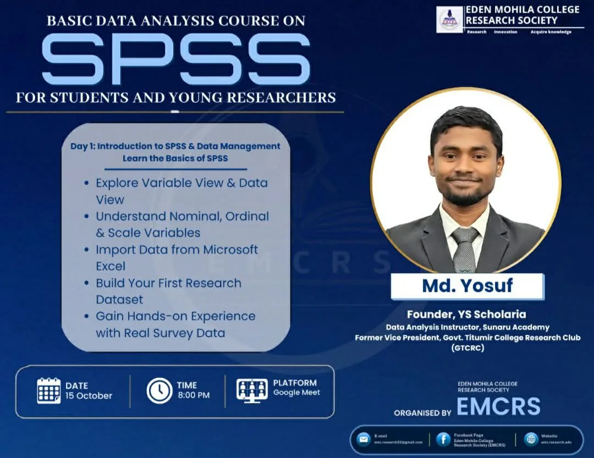

Research assistantships, field data collection, teaching and a founder role, from 2023 to the present.
– Present
Founder and Lead Consultant
YS Scholaria, Dhaka, Bangladesh
Founded and runs an academic and career service for students and professionals: CVs, cover letters, LinkedIn profiles, statements of purpose, thesis consultation, research proposals, report writing, SPSS and Stata analysis, survey analysis and website design.
Builds on four years of CV writing, with more than 50 CVs prepared, and on research and data-analysis teaching.
Eden Mohila College Research Society (EMCRS), online on Google Meet
Taught “Basic Data Analysis Course on SPSS for Students and Young Researchers”: three days, six sessions and about seven hours in total, starting on 15 October 2026. Nearly 60 students attended.
Day 1 covered Variable View and Data View, nominal, ordinal and scale variables, importing data from Excel, building a first research dataset and hands-on practice with real survey data.

Course poster issued by the Eden Mohila College Research Society.
– Present
Data Analysis Instructor
Sunaru Academy, Dhaka, Bangladesh
Delivers instructor-led SPSS training for research-focused learners, covering the full workflow from data cleaning through inferential statistics.
Led the 12+2 session course “Complete Research Data Analysis with SPSS” for a cohort of 32 research-driven participants.
Facilitated a three-day free live training, “SPSS for Research Beginners”, completed by more than 80 of the 120+ registered participants.
– Present
Research Instructor
Govt. Titumir College Research Club (GTCRC), Dhaka, Bangladesh
Facilitates structured training workshops on research methodology, quantitative data analysis (SPSS, Stata) and academic writing for undergraduate club members.
Designs course materials, leads hands-on data sessions and mentors students as they develop research proposals and scholarly manuscripts.
Research Assistant
Social Science Research Council (SSRC), Planning Division, Ministry of Planning, Bangladesh
Project: Overweight Girls and Maternal Health Hazards among Urban Adolescent College Students in Dhaka City
Authorised by the principal investigator to collect the first and second instalment cheques directly from the SSRC, Planning Division, Ministry of Planning, Government of Bangladesh.
Supported project documentation, progress reporting and coordination of research activities.
Research Assistant
Bangladesh Medical Research Council (BMRC), Dhaka, Bangladesh
Project: Socioeconomic Disparities in Maternal Cardiovascular Health
Authorised by the principal investigator to undertake project-related activities for BMRC, including financial and administrative coordination on behalf of Consultaid Bangladesh.
Contributed to field data collection, research implementation and activity reporting in line with BMRC protocols.
–
Research Assistant (Intern)
Accident Research Institute (ARI), Bangladesh University of Engineering and Technology (BUET), Dhaka
Drafted research proposals and technical reports on road accident causation, pattern analysis and public safety intervention strategies.
Conducted systematic literature reviews to support study design, keeping structured reference databases in Zotero.
Completed the ARI-BUET certified course Fundamentals of Research Methodology (March–May 2025) during the internship. See Certifications.
Field data collection, road traffic accident study
Accident Research Institute (ARI), BUET, Dhaka
Study: Psycho-social Effects of Road Traffic Accident Victims, Poor Disabled Persons and Their Families
Collected primary data at two sites in Dhaka: the National Institute of Traumatology and Orthopaedic Rehabilitation (NITOR) and the Mohakhali Korail Bosti settlement.
Administered structured questionnaires and held bedside interviews with road accident victims and their families in the NITOR wards.
Ran household surveys in Korail Bosti to capture the socio-economic and psycho-social effects on poor disabled persons and their families.
Survey team, Mohakhali Korail Bosti.The questionnaire used in the study.
–
Academic Instructor (part-time)
Rubel’s Economics Method, Dhaka, Bangladesh
Taught undergraduate years 1–3: basic and intermediate microeconomics, macroeconomics, statistics, mathematics, research methodology and econometrics.
Designed structured lesson plans, ran interactive tutorial sessions and mentored students individually on exam preparation, assignments and research projects.